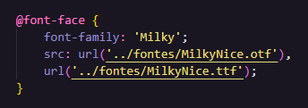
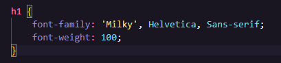

Nessa aulas vamos baixar fonte que não tem no Google Fonts usando o site Da Font. A fonte usada aqui foi a "Milky Nice". Os formatos dos aquivos utilizados foram: "OTF" e "TTF" que já vai servi para a maioria dos browsers.
Para linkar nossa fonte dentro do nosso projeto usamos o seguinte código:
Os dois pontos antes da barra é porque nosso arquivo fontes está dentro de outra passa no caso "../src/fontes".

Para usar nossa fonte em nossas tags e etc faremos assim:
